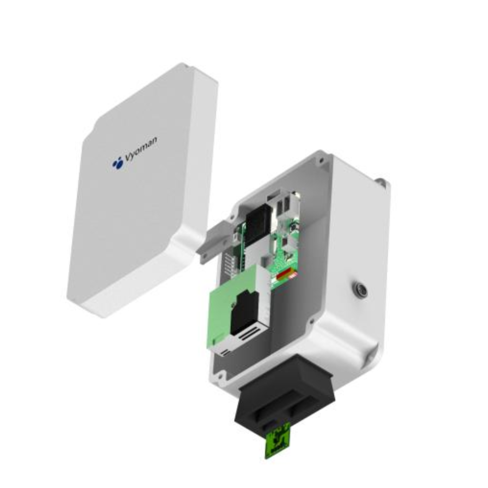

Design and Development of Low-Cost Particulate Matter Monitors

Low-cost air quality monitors are in demand today, driven by growing public awareness and strong interest from the research community. These devices are valuable because they help both citizens and scientists track how air quality changes across time and space, which in turn supports better mitigation strategies.
The datalogger we’ve developed is designed to handle this challenge across a wide range of scenarios. It can run on solar panels, batteries, or direct electrical supply, and even has a built-in battery charger—making it practical for places with intermittent electricity. For connectivity, it works seamlessly with WiFi, Bluetooth, and LoRaWAN networks, ensuring reliable data transfer no matter the environment.

A key strength of the system is its modular MCU design. Users can swap in the MCU that best matches their needs for connectivity, power use, or processing. Sensor selection is also flexible, tuned specifically to indoor or outdoor monitoring requirements. On top of this, the system is optimized for energy efficiency, delivering low power consumption without compromising data quality.
Finally, with additional I2C and UART ports, the device can easily expand to monitor extra environmental parameters, making it a versatile tool for both research and community air quality initiatives.